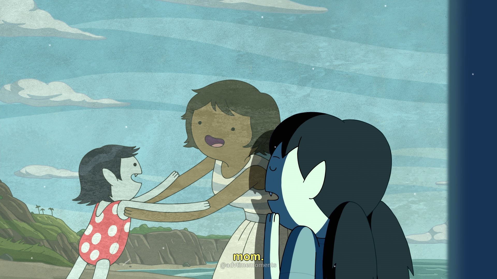
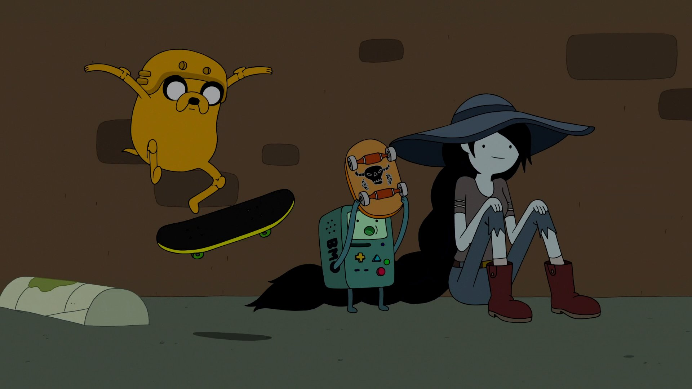

about
characteristics:
Marceline is a half-human/half-demon, turned into a half-vampire/half-demon after killing the previous vampire king many years prior to the start of the show, which made her the eponymous Vampire Queen. Although she is 1,000 years old, she takes on the physical appearance of a teenager.
Unlike traditional Western vampires, Marceline subsists not off blood, but rather the color red (including "low-grade" shades such as pink). Since she is only sated by the color itself, blood is appealing simply due to its hue (although Ward noted on his Formspring that she "drinks blood sometimes"). When Marceline is deprived of red, she enters into a "feral" state, and will instinctively try to kill others and drink their blood. Like traditional Western vampires, she is vulnerable to sunlight and is capable of turning into a bat of varying size.
personality
"I'm not mean. I'm a thousand years old, and I just lost track of my moral code."

Having spent centuries traversing the Land of Ooo, she has evolved into a "fearless daredevil", and her fondness for mischief has turned her into something of a trickster. Consequently, in her first role, Marceline functions as the antagonist of the story, forcing Finn and Jake from their home. However, she eventually becomes their close friend once Finn recognizes that she is "a radical dame who likes to play games".
It is implied that some of her more malevolent traits are solely based on her vampire instincts. In "Red Starved", Marceline slowly becomes vicious and sinister after having been deprived of food, trying to tempt Jake so that she could eat him. In "Vamps About", Marceline was fine with Peppermint Butler creating weapons meant to kill her as a contingency, stating that she could have snapped and killed everyone at any given time.
She can also be sentimental. She was very emotionally attached to her teddy bear Hambo, which was given to her by Simon Petrikov; after Ash sold it to Maja, she was furious and broke up with him. Later, Princess Bubblegum got Hambo back in the episode "Sky Witch". However, she was willing to give up Hambo in order to help Simon reconnect with his fiancée , Betty Grof.
Marceline seems to be very emotional. For example, in "What Was Missing", she seemed to be more aggressive towards Princess Bubblegum than she usually is. She is also very independent, and in early episodes would often act without concern for Finn or his friends. It is easier for Marceline to express her feelings through music, as seen in the "Fry Song" and "I'm Just Your Problem," but has trouble expressing them otherwise. She keeps a diary that she uses for inspiration for songs as seen in "Marceline's Closet." When Marceline read the lyrics to "Remember You", the song that Simon Petrikov wrote for her, she began to cry.
Near the end of "The Dark Cloud", her personality changed slightly. Marceline had learned how to be more mature which is proved by her accepting her immortality, by stating that she will be able to hang out with Princess Bubblegum forever. She also learned how to be more empathetic to others too. However, it is still unknown if she got over her emptiness in the end. In Obsidian, which takes place several years after the series finale, Marceline has grown to be a much more emotionally mature person, while still retaining her playfulness.
physical appearance

Marceline has light blue-gray skin, crooked fangs, and long, midnight black hair that reaches to her feet. She also sports two marks on her neck, which are the marks of the bite that turned her into a vampire. Her tongue is sometimes bifurcated, like a snake's, but other times looks like a normal human's. This may stem from her shapeshifting powers, allowing her to change its appearance as she pleases.
In the episode "Go With Me", her hair is shaved into an undercut, which reveals that she has pointy ears. She is very thin and sometimes appears to be thinner than Princess Bubblegum; however, her shape can vary slightly depending on who is drawing her. She is usually floating in the air but when she stands next to the other main characters she is taller than them; however in "I Remember You", she was just at Ice King's size (or slightly shorter), when she was young, she had a red shirt with a blue overall dress with white tube socks and red Mary Jane shoes. In most of her transformations, she is shown to have green eyes.
Marceline's general appearance, particularly her blue-gray skin, fangs, and pointy ears, is an apparent result of her demonic heritage, and she shares all of these characteristics with her father. From Marceline's maternal side, the episode "Everything Stays" revealed that she possesses genes from a dark-skinned race which she inherited from her mother, although evidently, the phenotype associated with these genes are recessive.
Her main outfit features a dark gray tank top, dark blue pants, and red boots.
Marceline wears different outfits in most of her episode appearances. For example, in "Henchman," she wears a dark violet strapless dress with a dull pink sash, lilac-purple stockings with dark purple stripes and pink heels.
powers and abilities
From her demonic father, Marceline inherited the power to absorb people's souls and minor control over fire as shown in evicted's first look at the fire kingdom and her use on candles. It was also implied by her Farmworld counterpart that her half-demon nature extended her natural lifespan, as Farmworld Marceline was able to survive for at least 1000 years, albeit old and withered.
After absorbing the essence of several powerful vampires, Marceline gained several supernatural powers. From The Fool she gained the power to fly; from The Empress the ability to turn invisible; from The Hierophant she gained the power to shape-shift (e.g. taking the form of a bat, a wolf, a reptilian creature, a large tentacled monster and she can even copy the form of other creatures if she has time to study them); and from The Moon, the ability to rapidly heal.

Marceline is immortal and unaging as a vampire. Meaning, as long as she isn't killed, she could live forever.
She lit up all the candles in Finn and Jake's house with a wave of her fingers.
She can move things using her mind. She probably obtained this power from Vampire King, but this hasn't been confirmed.
Marceline can raise the undead to serve her.
She can fire red energy beams from her arms that are able to restrain people.
As a result of absorbing the Vampire King's dark cloud half, she can now communicate with a miniature mental projection of him. During the turmoil of the Gum War, Marceline was able to releases the vampiric essence she absorbed from the Vampire King, transforming into a similar black, cloud-like form. In this state she was powerful enough to defeat one of the creatures created by GOLB.
According to Ward, she is ambidextrous, which explains her ability to play bass with both hands.
Marceline is a very talented musician and songwriter, and is proficient at singing and playing her basses.
The Nightosphere Amulet: When worn the wearer gains the ability to shoot green lasers which either vaporize or transform whatever they hit. They can also create or transform into a large cloud of blood mist.
Marceline is capable of consuming the color red from an object she bites, while the object itself remains physically unharmed.
weaknessess

Typical vampiric weaknesses. It is worth noting that while vulnerable to sunlight, as is common in vampire lore, she does not dissolve right away. The nuance to this in the Adventure Time world is that vampires are vulnerable specifically to direct sunlight. Marceline is capable of unrestricted movement on a bright sunny day provided that she shields herself sufficiently, which she usually accomplishes with a combination of a parasol and a large sunhat, sometimes with the addition of full-length gloves to cover her arms. According to Marceline, moving around on a bright day still hurts mildly, comparable to scraping her knee, but she can bear it.
Like typical vampires, Marceline cannot see her own reflection in a mirror.
She has revealed that she cannot digest syrup.
Whenever she doesn’t consume enough red-colored objects, Marceline goes into "feral mode", a state in which she becomes ravenous out of hunger. This rabid state subsides once Marceline consumes a sufficient amount of red.
relationships
Marceline has a close relationship with Finn and Jake. Marceline and Finn have many things in common with one another; in the episodes "Evicted" and "Henchman," it is stated that the reason Marceline befriended Finn is that he enjoys being himself. Although she has kissed Finn platonically on the cheek twice, Ward has noted that there is no romantic subtext between the two. On the other hand, Marceline and Jake share a more complex relationship. In her initial appearances, she derived pleasure from scaring Jake, who was terrified "of her vampire bite". In turn, Jake felt that she was evil and had managed to take over Finn's mind. Due to this, Jake attempted to kill her several times, to no avail. However, after the events of "Henchman," Jake seems to have forgotten his fear of her; in "Memory of a Memory," he even refers to her as a "friend" in one of her memories.

At the start of the series, Marceline shares a tense relationship with Princess Bubblegum. However, as the show has gone on, their relationship has been fleshed out and changed. Marceline was the first person to address Bubblegum by her first name—Bonnibel—which occurred in the episode "Go With Me". Their connections are explored further in the season three episode "What Was Missing". In the episode, Marceline's song "I'm Just Your Problem" and the dialogue between her and Bubblegum implied that they may have had some sort of relationship in the past, although the exact details surrounding the nature of the relationship were not explained. This later caused an internet controversy over Marceline's sexual orientation. However, after the events of "What Was Missing", Marceline and Bubblegum's relationship seems to have gotten better, as the two spend quality time together in "Sky Witch", "Varmints", Stakes, and "Broke His Crown" and are seen having a strong bond. In the series finale, "Come Along with Me", Marceline and Bubblegum express their romantic feelings for one another and kiss, and the episode's epilogue shows the two seemingly as a happy couple. In the episode "Obsidian" of the spin-off series Distant Lands, set some years later (Finn is shown as an adult man in the episode), Marceline and Bubblegum are depicted as living together in Marceline's cave and are in an explicitly romantic relationship with each other. The episode also confirms that they had previously been in a relationship and a break-up is shown through flashbacks.
Marceline and her father, Hunson Abadeer, have trouble accepting one another. Initially, Marceline believes her father does not care for her and expresses her feelings through the before-mentioned "Fry Song." Although they admit to loving each other, Abadeer constantly pressures Marceline to follow in the family business and take over ruling the Nightosphere, a prospective job Marceline does not want.

Marceline's mother, Elise, died centuries before the series and is depicted only in flashbacks. In "Everything Stays", Elise and a young Marceline are shown living together in a trailer in the desert. In "Obsidian" it is revealed that Elise tried to take Marceline to a fallout bunker but succumbed to illness on the way, leaving Marceline alone. Marceline believed that her mother had abandoned her until she finds a recording from Elise apologizing.
Marceline and the Ice King also have a complicated relationship. In the episode "I Remember You," it is revealed that the Ice King—then the human man named Simon Petrikov—discovered her crying in the ruins of a city destroyed by the Mushroom Wars. It was Simon who gave little Marceline Hambo and attempted to watch over her. This kind gesture made the Ice King a long-time close friend and father figure to Marceline. However, as the crown's power increased, Simon began to forget more and more about his relationship with Marceline until he had all but forgotten their friendship. Former storyboard artist and showrunner for the series Adam Muto explained that Marceline and the Ice King's history was not part of the series' initial plan but something that "evolved from [the show's] original course and it will likely continue to evolve in the future." The Distant Lands spin-off shows that Simon eventually regains himself and maintains a close relationship with Marceline.